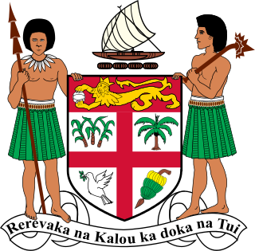

Actual executive power is in the hands of the cabinet, presided over by the Prime Minister. The Prime Minister is elected by Parliament, under the 2013 Constitution of Fiji. Under the former constitution, which was abrogated at the behest of the Military-backed interim government in 2009, the Prime Minister was formally appointed by the President, but had to be acceptable to a majority of the House of Representatives. In practice, this usually reduced the President's role to little more than a formality, with the position automatically going to the leader of the political party or coalition that controlled a majority of seats. There were times, however, when there was no clear majority in the House of Representatives. The parliamentary election of 1992 was inconclusive, and the position of the largest party, the Soqosoqo ni Vakavulewa ni Taukei, was further undermined by subsequent defections. On such occasions, the President had to take on the role of an arbitrator. After consulting with all the parliamentary factions, he would appoint as Prime Minister the person he judged to be the most acceptable to the majority in the House of Representatives. If no such person could be found, the President was required to order a new election.
Fiji's Head of State is the President. He is elected by Parliament of Fiji after nomination by the Prime Minister or the Leader of the Opposition, for a three-year term. Although his role is largely an honorary one, modelled after that of the British Monarchy, the President has certain "reserve powers" that may be used in the event of a national crisis. In practice, attempts by the President to assert the reserve powers have proved problematic. In 2000, in the midst of a civilian coup d'État against the elected government, President Ratu Sir Kamisese Mara announced on 27 May that he was assuming executive authority, but was evidently forced to resign two days later by the military Commander, Commodore Frank Bainimarama.